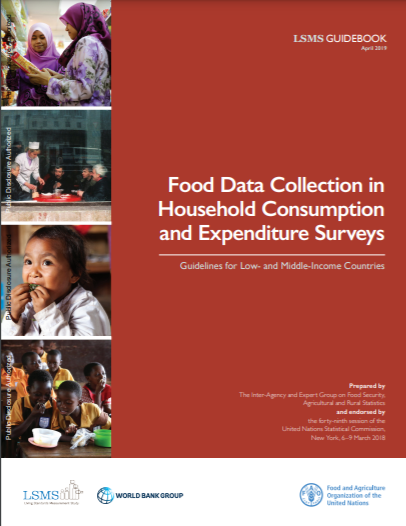

Food Data Collection in Household Consumption and Expenditure Surveys
Guidelines for Low- and Middle-Income Countries
2021-04-19
Preface

The measurement of food consumption and expenditure is a fundamental component of any analysis of poverty and food security, and hence the importance and timeliness of devoting attention to the topic cannot be overemphasized as the international development community confronts the challenges of monitoring progress in implementing the 2030 Agenda for Sustainable Development.
In 2014, the International Household Survey Network published a desk review of the reliability and relevance of survey questions as included in 100 household surveys from low- and middle-income countries. The report was presented in March 2014 at the forty-fifth session of the United Nations Statistical Commission (UNSC), in a seminar organized by the Inter-Agency and Expert Group on Food Security, Agricultural and Rural Statistics (IAEG-AG).
The assessment painted a bleak picture in terms of heterogeneity in survey design and overall relevance and reliability of the data being collected. On the positive side, it pointed to many areas in which even marginal changes to survey and questionnaire design could lead to a significant increase in reliability and consequently, great improvements in measurement accuracy. The report, which sparked a lot of interest from development partners and UNSC member countries, prompted IAEG-AG to pursue this area of work with the ultimate objective of developing, validating, and promoting scalable standards for the measurement of food consumption in household surveys.
The work started with an expert workshop that took place in Rome in November 2014. Successive versions of the guidelines were drafted and discussed at various IAEG-AG meetings, and in another expert workshop organized in November 2016 in Rome. The guidelines were put together by a joint FAO-World Bank team, with inputs and comments received from representatives of national statistical offices, international organizations, survey practitioners, academics, and experts in different disciplines (statistics, economics, nutrition, food security, and analysis). A list of the main contributors is included in the acknowledgment section. In December 2017 a draft of the guidelines was circulated to 148 National Statistical Offices from low- to high-income countries for comments. The document was revised following that consultation and submitted to UNSC which endorsed it at its forty-ninth session in March 2018 under item 3(j) of the agenda, agricultural and rural statistics. The version presented here reflects what was endorsed by the Commission, edited for language. The process received support from the Global Strategy for Agricultural and Rural Statistics.
The document is intended to be a reference document for National Statistical Offices, survey practitioners, and national and international agencies designing household surveys that involve the collection of food consumption and expenditure data.